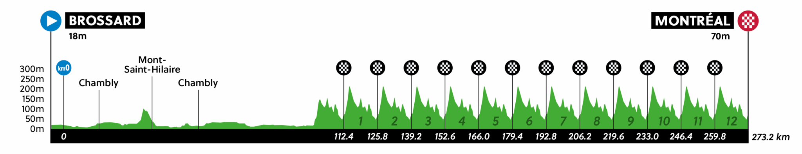

Using the BikeScout Engine, we processed the grueling 277.93 km road race for the Elite Men's World Championship in Montreal.
Our predictive models reveal a relentless circuit-based war of attrition, defined by brutal early crosswinds, explosive repeating climbs, and extreme metabolic demands culminating in a highly technical finale.

MISSION TELEMETRY:
- > MODE: ROAD
- > TOTAL DISTANCE: 277.93 KM
- > TOTAL ASCENT: 3813 M
- > CLIMB PROFILE: MULTIPLE CAT 3 (2.82 KM @ 5.5%)
- > WEATHER ALERT: [CAUTION] RISK SCORE 43.8
- > WIND RISK: GUSTS UP TO 54.7 KM/H
Mission Briefing:
Download tactical PDF and raw JSON metrics for Montreal WC 2026.
Tactical Breakdown
1. Early Echelon Threats & Circuit Chaos
Before the heavy circuit climbing takes its toll, the peloton must survive the wind. The tactical alerts highlight severe echelon risks right out of the gate.
- Crosswind Alerts: At KM 3.3, 5.2, 15.4, and 22.3, riders face direct 22.0 km/h crosswinds. Combined with 54.7 km/h gusts, positioning here is critical to avoid early splits.
- Circuit Repetitions: The race is defined by a punishing repetition of a Cat 3 climb (2.82 km @ 5.5%). Simulations predict an elite pace requiring 7.75 w/kg (weather adjusted) and VAMs exceeding 1740 to stay with the front group during the later laps.
2. Weather Analysis: High Wind & Chill
The forecast engine has flagged a 🟡 [CAUTION] status. While total rainfall is moderate (peaking at 0.6mm around 16:00), the wind is a race-altering factor.
- Gusts & Temperature: Wind gusts will batter the peloton at nearly 55 km/h. While ambient temperatures hover around 14–18°C, the apparent temperature will drop as low as 9.7°C.
- Gear Advice: Spring/Fall protocol is active. Knee/arm warmers, a windproof gilet, and a medium base layer are highly recommended to prevent core temperature drops over the 6+ hour race.
3. Explosive Walls & Technical Drops
The final lap will be explosive. The telemetry highlights specific "Action Zones" where the Rainbow Jersey will likely be decided.
- Attack Points: KM 260.56 and KM 273.99 feature explosive walls hitting 12.7% gradient—perfect launchpads for late solo attacks.
- Technical Descents: What goes up must come down dangerously. The route features high-difficulty drops at -17.4% (KM 271.63) and a terrifying -25% plunge at KM 277.88, practically in sight of the finish line.
4. Extreme Metabolic & Hydration Management
Riding at threshold for nearly 280 km requires a massive, perfectly executed fueling strategy. The risk of bonking is critical.
- Hydration & Electrolytes: Riders will need a massive 8.8 Liters of fluid (1042 ml/h) and a staggering 15,768 mg of sodium (1876 mg/h). Bottles must be heavily supplemented with salt.
- Carbohydrate Load: The engine dictates a high-target intake of 120g/hr (1008g total). To prevent GI distress at this volume, a strict 2:1 Glucose-to-Fructose (or 1:0.8) ratio is mandatory.
Mission Strategy Summary
The Montreal World Championship is a test of raw power, bike handling, and extreme gastric endurance.
- 1. Survive the Early Wind: Stay hyper-vigilant in the first 25 km to avoid echelon splits caused by 54 km/h crosswind gusts.
- 2. Force-Feed at 120g/hr: The prolonged high intensity demands maximum carbohydrate absorption. Miss a feed zone (like the ones at KM 45.5 or 145.3), and the glycogen crash will be unrecoverable.
- 3. Master the Final 15km: Save the ultimate match for the 12.7% attack walls at KM 260 and 273, and trust your tires on the high-risk -25% final technical descent.
Conclusion
The 2026 World Championship in Montreal will not just be won by the strongest climber, but by the rider who can process 120 grams of carbs an hour, survive echelon crosswinds, and bomb down -25% technical descents after 3,800 meters of accumulated elevation. Tactical positioning and flawless logistics will crown the next World Champion.